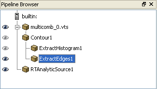
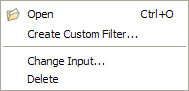
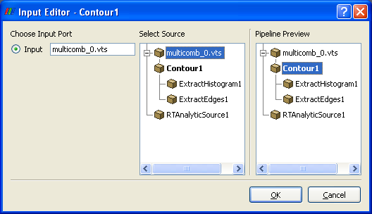

The pipeline browser, usually displayed in the upper left corner of the user interface, provides information about ParaView's current visualization pipeline. A visualization pipeline begins with either a reader or a source, and filters may be applied to it. Additional filtering operations may be performed on the output of the filter(s). Also more than one reader or source may have been added to the ParaView session. The pipeline browser shows how the readers, sources, and filters are connected together. It allows easy access to any of the readers / sources / filters and their output.

To the left of each reader, source, or filter in the pipeline browser is an eye icon that indicates whether the resulting dataset is visible in the selected view (outlined in red). A dark eye icon indicates the dataset is visible; a gray one indicates it is not. Left-clicking on an eye icon toggles the visibility of the associated dataset in the selected view.
At the top of the pipeline browser is the name of the server to which ParaView is connected (or "builtin" if running ParaView stand-alone). Below the server name is the name of the server is a tree structure containing the name of every reader, source, or filter that has been added to the visualization pipeline. The server is shown as the root of the tree structure, and the readers and sources are at the first level down from the server. A filter applied to a given reader or source is at the next level down from it, and subsequent filters are added at increasingly lower levels. In the pipeline browser image shown above, multicomb_0.vts and RTAnalyticSource1 are at the first level below the server. Contour1, which was applied to multicomb_0.vts, is at the next level below this reader. Then both ExtractHistogram1 and ExtractEdges1 were applied to Contour1, and they are at the level below Contour1 in the tree structure.
Left-clicking on a reader, source, or filter in the pipeline browser selects it and displays the appropriate Properties, Display, and Information tabs in the object inspector. The name of the selected item in the pipeline browser may be changed by left-clicking the selected item (reader, source, or filter), typing a new name, and pressing Enter.

Right-clicking anywhere in the pipeline browser displays a menu from which you can open a new data file (the same operation as selecting Open from the File menu). If the mouse is positioned over a reader, source, or filter when the right mouse button is pressed, the menu also contains options for creating a custom filter and for deleting the reader, source, or filter (only active if this item is at the end of the visualization pipeline). If a filter is right-clicked, the menu also contains an option to change the filter's input.

Right-clicking Contour1 from the pipeline browser example shown above and selecting Change Input causes the Input Editor to be displayed. From this dialog, the input to a filter can be changed. In this example, the possibilities for input to the contour filter are multicomb_0.vts and RTAnalyticSource1; the input editor does not allow the creation of loops in the visualization pipeline. Left-clicking on one of the possible inputs in the Select Source window causes the Pipeline Preview window to show what the contents of the pipeline browser would be if the input was changed in this way. Clicking OK causes the input to change.